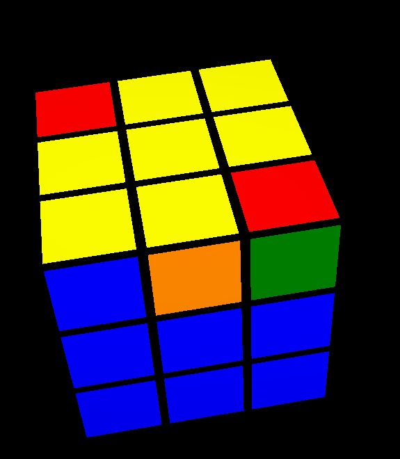
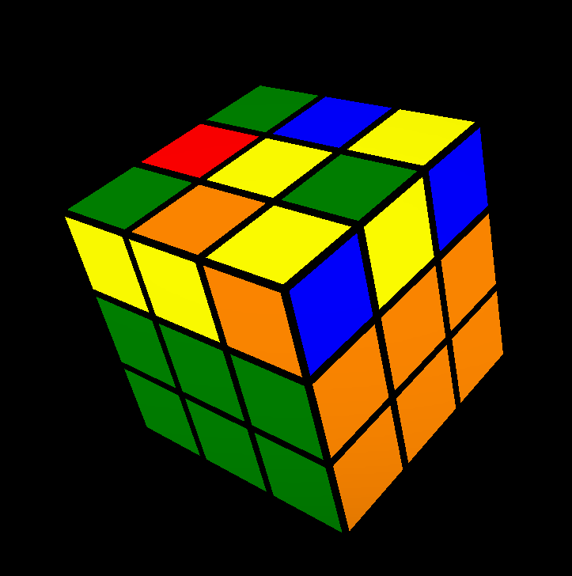
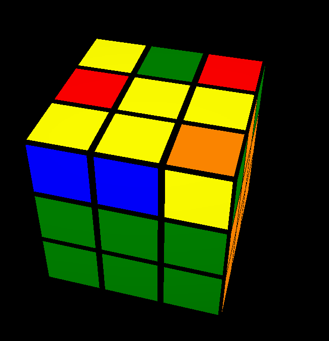
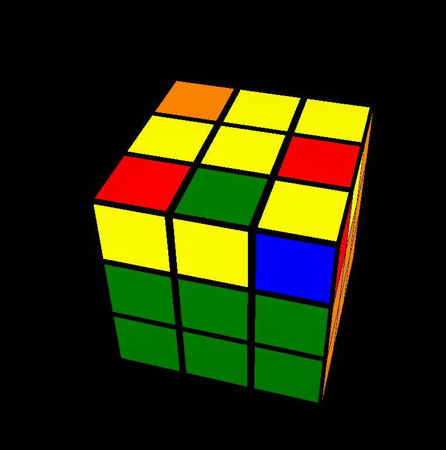
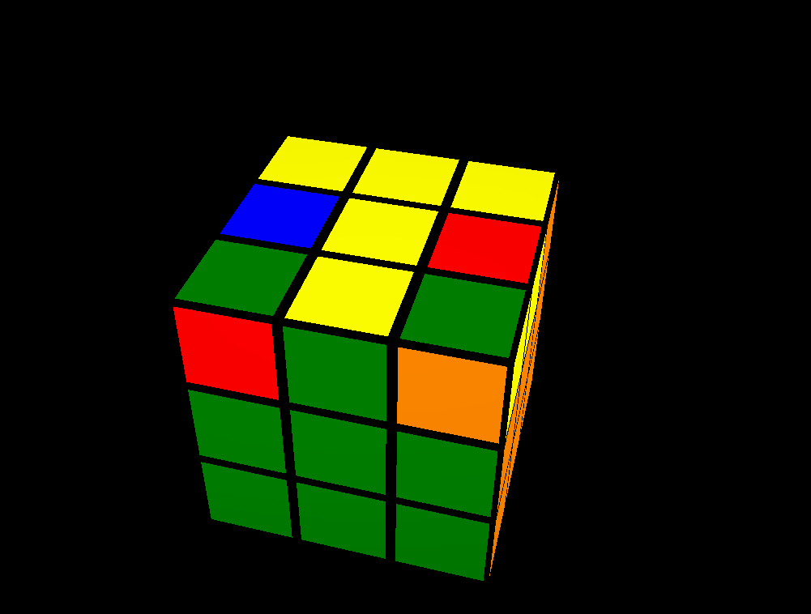
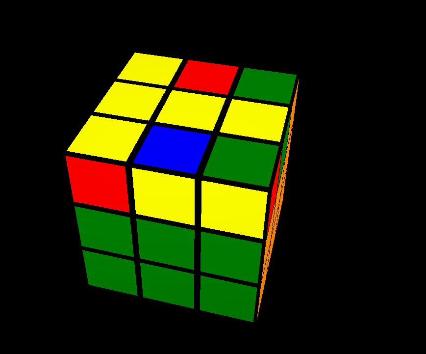

كيفية عمل الزائد الاصفر
نسيب الزائد الابيض للتحت ثم نعمل

_-_-_-_-_-_-_-_-_
لو كان بس الوجه الاصفر فارغ بدو اي قطعة مجاورة به اصفر فوق

نعمل F R U R' U' F'

_-_-_-_-_-_-_-_-_
لو طلعنا زوية زي نحط فوق علي الشمال

نعمل F R U R' U' F'

_-_-_-_-_-_-_-_-_
لو طلعلنا خط مستقي نسيب بالعرض

نعمل F R U R' U' F'
_-_-_-_-_-_-_-_-_
وكدة نكون شرحنا كيفية عمل زائد اصفر
فديو توضيحي عن الذي شرح
التالي
السابق